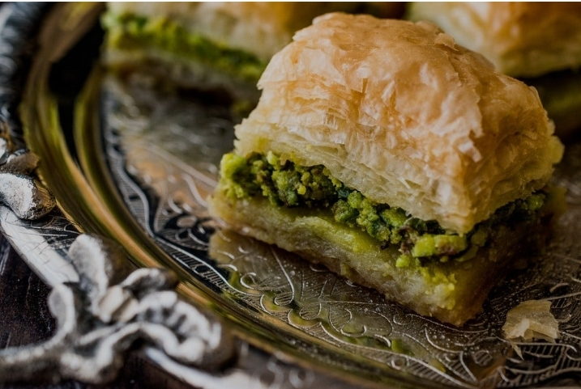

Osmanlı devleti içinde pek çok kültüre, sahip olanbir devlet idi ve medeniyetini de unutmayalım.Ozamanlarda meşhur yemekler baklava gibi bundan bahsetmiş iken ilk konumuza giriş yapalım.
Osmanlı mutfağı 15. Yüzyıldan beri sevilen bir mutfaktır.Bugüne kadar gelmiş enfes yemekler baklava ve başka vazgeçilmezlerimiz vardır.
Osmanlı döneminde baklava

Bugünümüzdeki farklı baklava çeşitleri
Osmanlı dönemindeki yemekler:
Soğanlı Yumurta
Yufkalı Dörüzziyafe Köftesi Fodula (Dana etli çavdar ekmeği dolması)
Mutancana
Mahmudiye
Kavun Dolması
Akike
Süt Kebabı
Beyrani
Mıhlama
Kırma Tavuk Kebabı
Uskumru Dolması
Fincan Böreği ya da Su Böreği
Pilavlı Tas Kebabı
Evet bunlar eski zamanlardaki yemekler bazılarını yada çoğunu ilk defa duymuş olabilirsiniz.(bende dahil)çünkü, günümüzdeki yemekler arasında bunları duymak bence mümkün değil.
Peki nasıl buraya kadar geldik? Hemen anlatayım.
Bu araştırmamızdaki konu Osmanlı'dan bugünümüzdeki yemekler olduğu için ,ilk önce yemeklerdeki gelişmelere bakalım:
15. Yüzyılda Osmanlı Devleti’nin kuruluş döneminde, yemek kültürü hem saray hem halk mutfağı olarak ikiye ayrılıyordu. Saray mutfağı, Topkapı Sarayı başta olmak üzere zengin bir çeşitliliğe sahipti; et yemekleri, pilavlar, börekler ve tatlılar (özellikle baklava ve şerbetler) ön plandaydı. Baharat kullanımı yaygındı ve yemeklerde estetik sunumlar önemliydi. Halk mutfağı ise daha basit ve besleyiciydi; sebzeler, baklagiller ve sınırlı et tüketimiyle hazırlanırdı.
16. Yüzyılda Osmanlı mutfağı olgunlaştı. Yemek tarifleri yazılmaya başlandı, pilav ve börek çeşitleri arttı, etli yemekler sebzeler ve baklagillerle zenginleştirildi. Bu dönemde kahve ve çay kültürü de hayatımıza girmeye başladı; kahvehaneler sosyal hayatın önemli merkezlerinden biri hâline geldi.
ve 19. yüzyıllarda saray mutfağı Batı etkisiyle daha da çeşitlendi. Fransız mutfağından tatlı ve sunum teknikleri Osmanlı sarayına ulaştı. Lokum, şekerlemeler ve tatlı çeşitleri yaygınlaştı. Halk mutfağında ise unlu mamuller, çorbalar ve hamur işleri ön plandaydı; günlük beslenme hala büyük ölçüde ev yapımı yemeklere dayanıyordu. yüzyıla gelindiğinde sanayileşme ve ulaşım imkanlarının artmasıyla gıda çeşitliliği yükseldi. Konserve ve paketlenmiş ürünler hayatımıza girdi. Ev yemekleri hâlâ yaygın olsa da, hazır gıdalar yavaş yavaş tüketim alışkanlıklarına girmeye başladı.
Günümüzde ise yemek kültürü hem global(dünya çapında) hem de yerel etkilerle zenginleşti. Fast food ve hazır yemekler yaygınlaşsa da sağlıklı beslenme ve organik ürünler önem kazandı. Geleneksel Osmanlı ve Türk yemekleri modern sunumlarla yeniden popüler hâle geldi. İnsanlar hem nostalji hem de sağlık açısından yemeklerini seçiyor, tarifler internet ve sosyal medya sayesinde hızla yayılıyor.